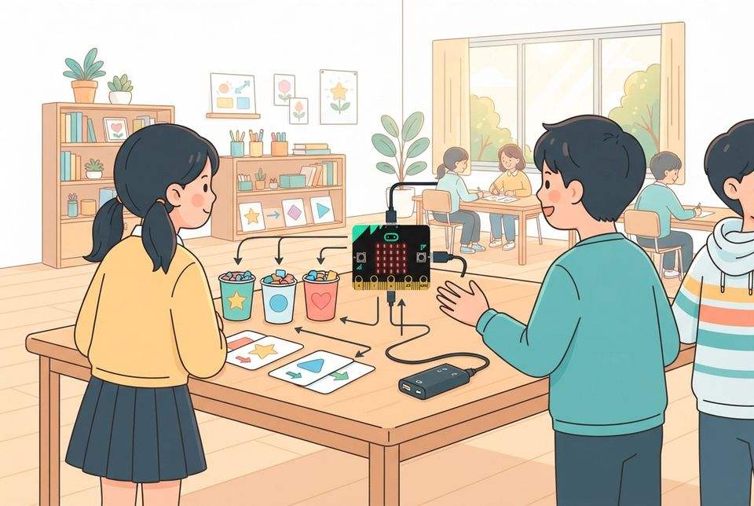
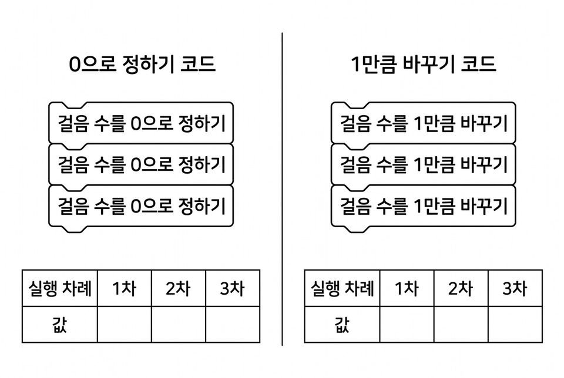
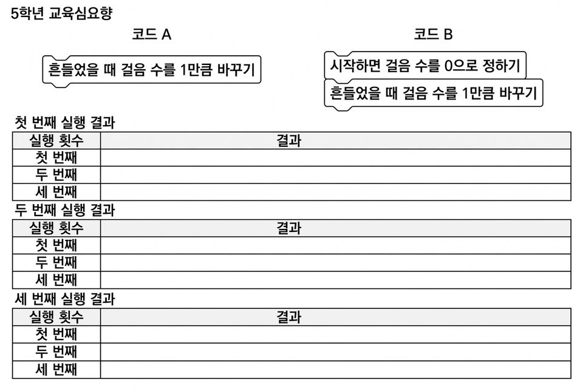
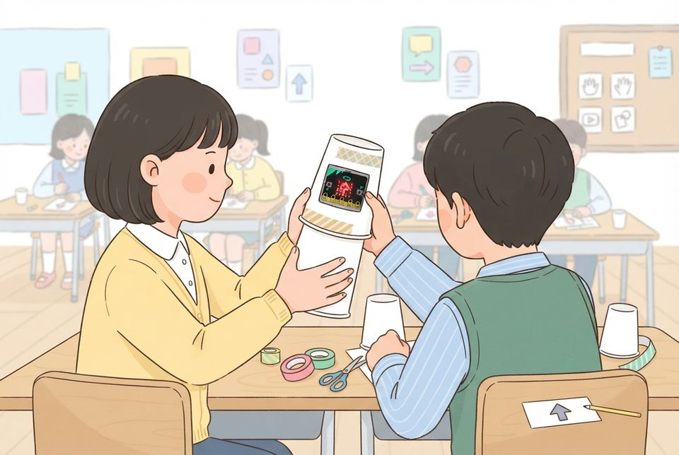

값을 저장하고 바꾸는 변수로 흔들기 횟수를 세고, 순차·선택·반복을 종합한 카운터 만들기
학습 문제 — 값을 저장하고 바꾸는 변수로 흔들기 횟수를 세고, 순차·선택·반복을 모두 쓴 흔들기 카운터를 완성해 봅시다.
개요
| 성취기준 | [5실소프트웨어03-01] 예제 프로그램을 바꾸어 보며 순차·선택·반복 구조와 수를 세는 변수를 사용한 프로그램을 작성한다. 연계 성취기준: [6실05-02] |
|---|---|
| 핵심 역량 | 지식정보처리 역량, 창의적 사고 역량 |
| 핵심 기능 | ① 문제를 해결하는 기초적인 프로그래밍하기 ② 변수에 처음 값을 저장하고 흔들 때마다 값 바꾸기 ③ 흔들기 횟수를 예상하고 실행 결과와 견주기 ④ 순차·선택·반복을 한 프로그램에 모두 쓰기 ⑤ 체크리스트로 종합 미션을 시험하며 완성하기 |
| 가치 태도 | 생활 속에서 컴퓨터를 활용해 해결 가능한 문제를 탐색해 보려는 자세 예상과 실행 결과가 다를 때 그 까닭을 끝까지 찾아보려는 자세 |
교수학습 활동
19차시 도입 동기 유발 · 학습문제 제시19차시 전개 활동1. 숫자 주머니 놀이로 값 저장하고 바꾸기 · 활동2. 흔들기 카운터 만들기20차시 전개 활동3. 종합 미션: 순차·선택·반복 카운터 · 활동4. 종이컵 셰이커로 흔들기 30 챌린지20차시 정리 배운 내용 정리 · 다음 차시 예고
19차시도입8분
동기 유발
- 걸음을 손으로 세다가 수를 놓친 경험 떠올리기
- 15~16차시 판정기 뼈대의 ‘값 상자’ 다시 보기
- 그 값 상자가 ‘변수’였음을 알고 오늘 쓰임 예상하기
- 수업 끝에 할 ‘흔들기 30 챌린지’ 규칙 미리 듣기

학습문제 제시
- 값을 저장하고 바꾸는 변수로 흔들기 횟수를 세고, 순차·선택·반복을 모두 쓴 흔들기 카운터를 완성해 봅시다.
준비물마이크로비트, 데이터 전송용 USB 케이블
자료변수 추적지, 판정기 뼈대 화면, 흔들기 30 챌린지 규칙 카드
유의점기기 나누기·연결 시간을 도입에 포함한다.
유의점변수는 ‘값 하나를 저장하고 바꾸어 수 세기’ 한 가지 쓰임만 다룬다.
유의점마이크로비트가 없으면 시뮬레이터 화면으로 같은 활동을 한다.
19차시전개32분
활동1. 숫자 주머니 놀이로 값 저장하고 바꾸기 (14분)
- ‘흔든수’ 이름표를 붙인 종이컵과 바둑돌 준비하기
- 블록 카드를 뒤집으며 컵에 돌을 넣고 빼기
- 차례마다 컵에 든 돌의 수를 변수표 한 칸에 적기
- ‘0으로 정하기’는 컵을 비우는 것, ‘1만큼 바꾸기’는 한 개 더 넣는 것임을 짝에게 말하기

활동2. 흔들기 카운터 만들기 (18분)
- [시작하면 실행]에 [흔든수를 0으로 정하기] 놓기
- [흔들림 감지하면 실행] 안에 [흔든수를 1만큼 바꾸기] 넣기
- 다섯 번 흔들 때 나올 값을 먼저 예상해 적기
- 전송하고 흔들어 예상과 화면의 수 견주기
- 처음 값 블록을 빼고 다시 시작하면 어떻게 되는지 예상하고 확인하기

준비물마이크로비트, USB 케이블, 필기구, 짝당 종이컵·바둑돌 10개·블록 카드 6장
자료변수 추적지, 흔들기 카운터 뼈대 예제
유의점예상한 값을 적기 전에는 실행하지 않게 한다.
유의점‘값이 쌓인다’고 말하는 학생에게는 컵에 든 돌이 몇 개로 적히는지 되묻는다.
유의점느린 학습자는 컵과 돌을 먼저 움직인 뒤 표에 옮겨 적게 한다.
유의점흔들림을 셀 때 기기를 세게 휘두르지 않게 한다.
20차시전개32분
활동3. 종합 미션: 순차·선택·반복 카운터 (20분)
- 미션 체크리스트 세 칸 함께 읽기
- 순차: 시작하면 아이콘을 보이고 흔든수를 0으로 정하기
- 반복: [무한 반복 실행] 안에서 흔든수를 화면에 보이기
- 선택: [만약 흔든수 ≥ 30 이면] 하트, 아니면 수 보이기
- 체크리스트 칸마다 실행해 보고 되면 ✔ 표시하기

활동4. 종이컵 셰이커로 흔들기 30 챌린지 (12분)
- 숫자 주머니 컵 창에 기기를 넣고 컵을 덮어 셰이커 만들기
- 다시 시작해 0이 보이는지 확인하기
- 짝과 번갈아 흔들다가 30번이라 생각될 때 멈추기
- 30에 더 가까운 사람 가리고 하트가 켜졌는지 보기

준비물마이크로비트, USB 케이블, 배터리 팩, 종이컵 2개, 마스킹테이프, 가위
자료종합 미션 체크리스트(순차·선택·반복 세 칸), 챌린지 규칙 카드
유의점느린 학습자는 순차·반복이 든 뼈대 코드에 조건 블록만 더하게 한다.
유의점빠른 학습자는 B 버튼으로 흔든수를 0으로 되돌리는 기능을 더하게 한다.
유의점전송 실패 기기는 교사가 기록하고, 기기 고장을 이해 부족으로 평가하지 않는다.
유의점챌린지는 많이 흔들기가 아니라 30에 가깝게 멈추기로 겨루게 한다.
20차시정리8분
배운 내용 정리 (6분)
- 변수는 값 하나를 저장하고 바꾸는 상자임을 한 문장으로 적기
- 내 카운터에서 순차·선택·반복이 쓰인 곳을 짝에게 짚어 주기
다음 차시 예고 (2분)
- 흔들기 카운터를 넓혀 나만의 만보기를 만든다는 안내 듣기
- 파일 이름을 확인하고 기기와 케이블 정리하기
자료변수 추적지
유의점쓰기가 어려운 학생은 구술로 확인하고 지원한 사실을 기록한다.
유의점기기 조작 속도로 이해 정도를 판단하지 않는다.
평가 계획
컴퓨팅 사고력 · 변수 값 바꾸기와 세 구조의 종합
변수에 처음 값을 정하고 흔들 때마다 값을 바꾸어 횟수를 세며, 순차·선택·반복을 모두 쓴 카운터를 완성할 수 있는가?
| 수준 | 평가 기준 |
|---|---|
| 매우 잘함 | 흔들기 전에 값을 예상하고 실행 결과와 견주어 적는다. 처음 값 정하기와 1만큼 바꾸기의 차이를 값의 변화로 설명한다. 체크리스트 세 칸(순차·선택·반복)을 모두 실행으로 확인하고, 코드에서 각 구조가 쓰인 곳을 짚어 설명한다. |
| 잘함 | 흔들 때마다 변수 값이 커지는 카운터를 만들고, 체크리스트 세 칸을 모두 완성하나 구조별 설명이 간단하다. |
| 보통 | 흔들기 카운터는 실행되나 체크리스트 가운데 한두 칸만 완성했거나, 정하기와 바꾸기의 차이를 결과로 설명하지 못한다. |
| 노력요함 | 교사가 뼈대 코드를 함께 짚어 준 뒤에도 처음 값을 정하거나 흔들 때마다 값을 바꾸는 데 어려움이 있다. |
| 미관찰 | 결석이나 미제출, 기기 장애로 확인하지 못한 경우. 낮은 성취로 적지 않고 따로 기록한 뒤 보충 확인 시점을 정한다. |
평가 방법 변수 추적지 분석 · 체크리스트·실행 확인 · 구술 확인
연동 도구·링크
과정안에 나오는 도구가 저절로 걸립니다. 수업 전에 학교망에서 열리는지, 블록·메뉴 이름이 바뀌지 않았는지 확인하세요.
MakeCode (micro:bit) ↗마이크로비트 블록 코딩·시뮬레이터·무선(라디오)계정: 필요 없음라디오 블록 설명 ↗MakeCode (micro:bit) 안내마이크로비트 V2 ↗LED·버튼·가속도·소리 센서, 무선 통신계정: 필요 없음
내 수업 링크
학급 패들렛, 엔트리 작품, 활동지 주소처럼 이 차시에 쓸 링크를 걸어 둡니다. 이 브라우저에만 저장되고 밖으로 보내지 않습니다. 학생 이름이 든 주소는 넣지 마세요.